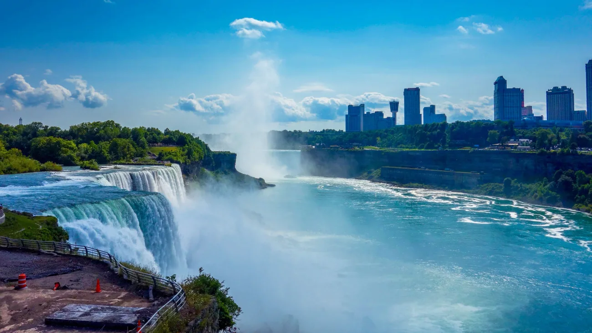
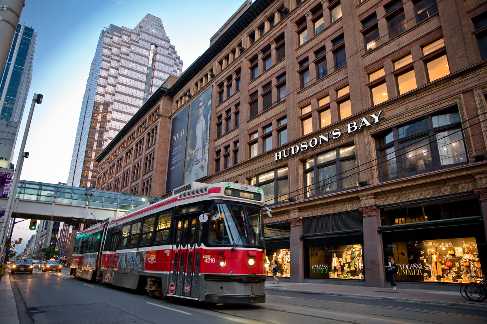

AmericaGo
Canadá
Canadá, el segundo país más grande del mundo por superficie, es una nación de asombrosa diversidad natural y cultural. Ubicado en América del Norte, la cultura de Canadá es igualmente diversa, influenciada por una mezcla de tradiciones indígenas, francesas e inglesas, así como por inmigrantes de todo el mundo.
Cataratas de Niagara

Ciudad de Bancouver

Toronto, la ciudad más grande de Canadá y capital de la provincia de Ontario, es un vibrante centro urbano que combina una rica diversidad cultural con un impresionante horizonte de rascacielos. La metrópolis es un crisol de culturas, reflejado en sus barrios étnicos, como Chinatown y Little Italy, donde los visitantes pueden explorar una variedad de cocinas, tiendas y festivales auténticos. El icónico CN Tower se eleva en el centro de la ciudad, ofreciendo vistas panorámicas inigualables del paisaje urbano y el lago Ontario. Toronto es también un destino cultural con una serie de museos de renombre, teatros, galerías de arte y una vibrante escena musical en constante evolución. Desde el histórico Distillery District hasta el dinámico mercado de St. Lawrence, la ciudad está llena de lugares emocionantes para descubrir.